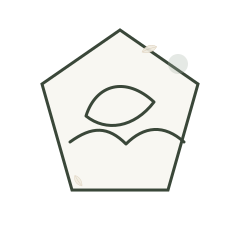
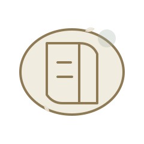
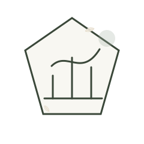

Care
Attentive guidance.
Solace / Portrait Hero
A calm professional presence for aesthetic guidance, consultation, and realistic planning.

Solace / Editorial Pause
The best decisions are made with time, attention, and honest guidance.

Solace / Client Guidance
The journey begins with conversation, then moves into careful evaluation and planning.

Solace / Responsible Boundaries
Recommendations depend on individual assessment and should be discussed with realistic expectations.

Solace / Related Routes
Learn more about the approach and the care journey.
Solace / Professional Presence
Her approach is attentive, clear, and guided by the person in front of her.

Solace / Care Philosophy
Good care begins with understanding your goals, routine, and comfort before planning next steps.
Solace / Values in Practice
Care, trust, safety, and naturality shape the client experience.

Attentive guidance.
Clear explanations.
Responsible boundaries.
Natural confidence.
Solace / Human Trust
Consultation should feel clear, respectful, and personal from the first conversation.
Solace / Consultation CTA
Request an evaluation or send a private message when you are ready.